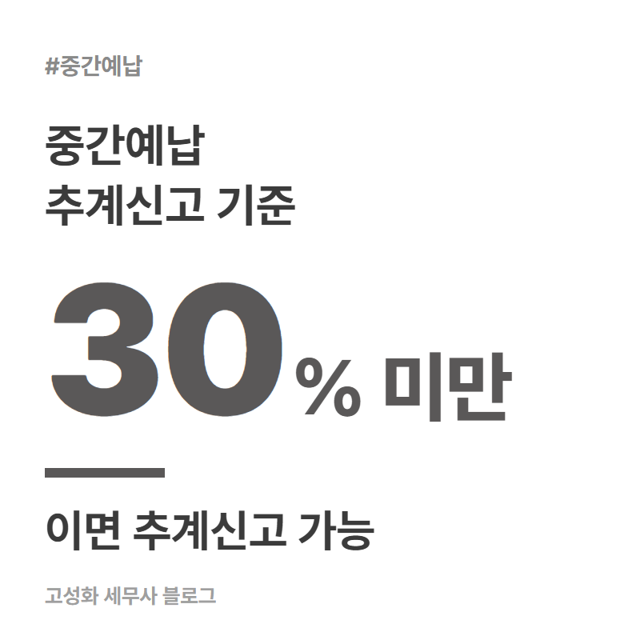
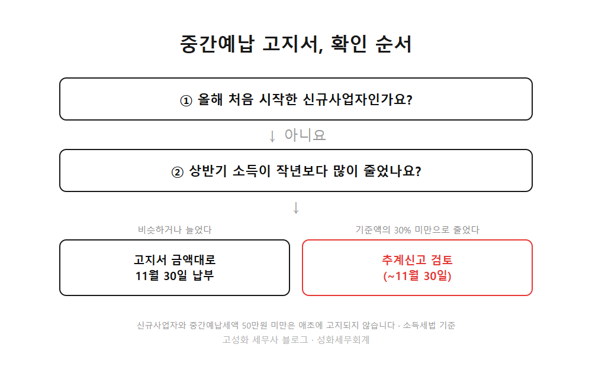
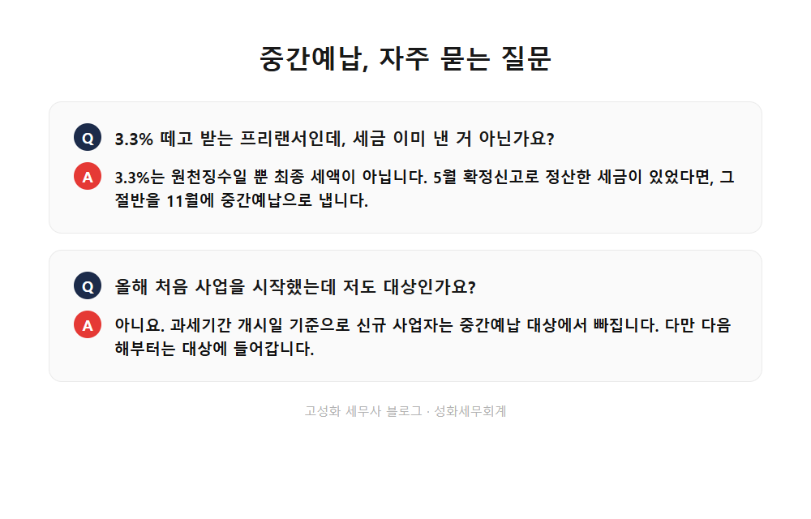

← 세무칼럼 목록
종합소득세·프리랜서

종합소득세 중간예납 3.3% 프리랜서도 내야 할까
11월이 되면 종합소득세 중간예납 고지서를 들고 사무실 문을 두드리시는 분들이 늘어납니다. 서초구 방배천로에서 프리랜서와 개인사업자 기장을 주로 맡아온 세무사로서, 이 시기마다 받는 질문은 거의 똑같습니다. "5월에 이미 신고했는데 이건 또 뭔가요."
이 글을 보고 계신 분은 아마 이런 상황 중 하나실 겁니다. 난데없이 고지서를 받고 뭔지 몰라 당황하신 분, 3.3% 원천징수로 이미 세금을 뗐는데 또 내라니 억울한 프리랜서, 올해 매출이 작년보다 확 줄어서 이 금액을 그대로 내야 하나 고민인 사업자. 셋 다 답은 같은 제도 하나에서 나옵니다.
이 글에서 다루는 내용
- 중간예납이 뭐고 누가 얼마를 내나
- "3.3% 뗐는데 또 내라고요" 이 오해부터 풀어야
- 매출이 줄었으면 그대로 다 낼 필요는 없다
한눈에 보기



자주 묻는 질문
올해 처음 사업을 시작했는데 저도 11월에 내야 하나요?
추계신고를 하면 5월 확정신고 때 불리해지는 건 아닌가요?
고지서 금액이 예상보다 큰데 그냥 내도 되나요?
정리하면
중간예납은 작년 세금의 절반을 11월에 미리 내는 제도이고, 3.3% 프리랜서도 대부분 예외 없이 대상입니다. 다만 올해 상반기 소득이 많이 줄었다면 11월 30일까지 추계신고로 줄일 수 있습니다.
계산 자체가 상반기 장부, 이월결손금, 세액공제까지 얽혀서 설명이 좀 복잡한 편입니다. 혼자 계산하다 놓치는 부분이 있을까 걱정되신다면, 서초 사무실로 오시거나 자료만 보내주셔도 확인해드립니다.
본문 전체와 근거 조문은 블로그에서 확인하실 수 있습니다.